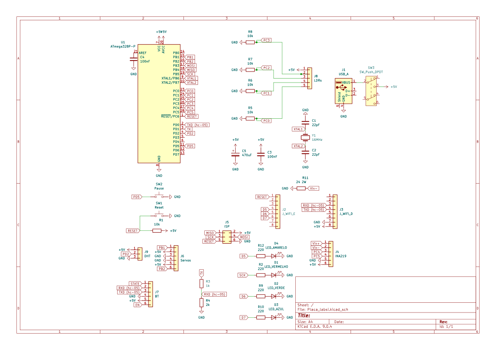
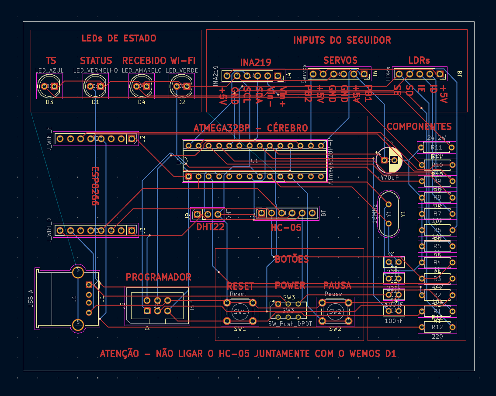
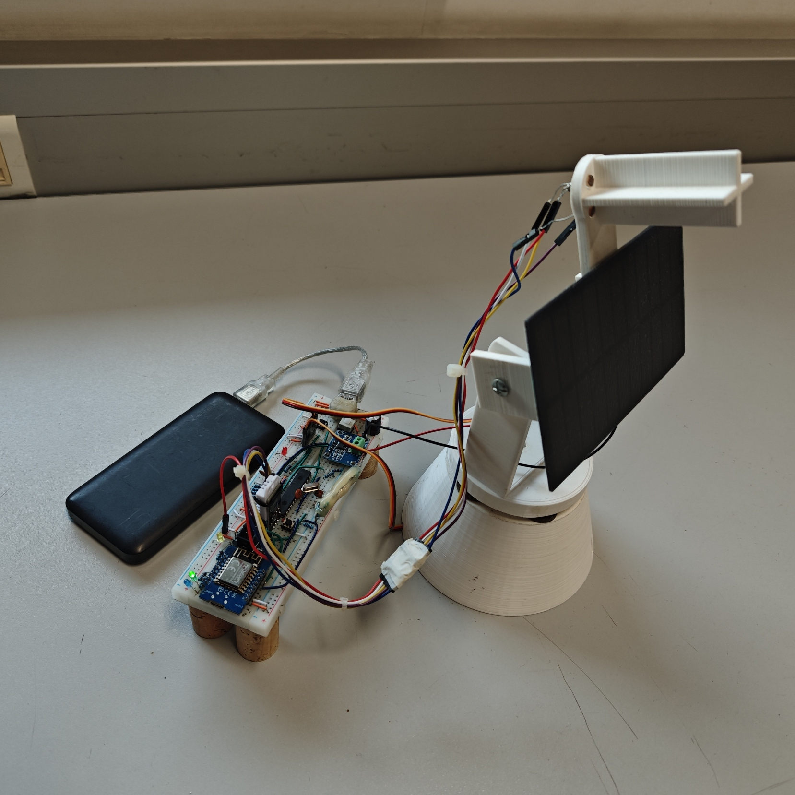
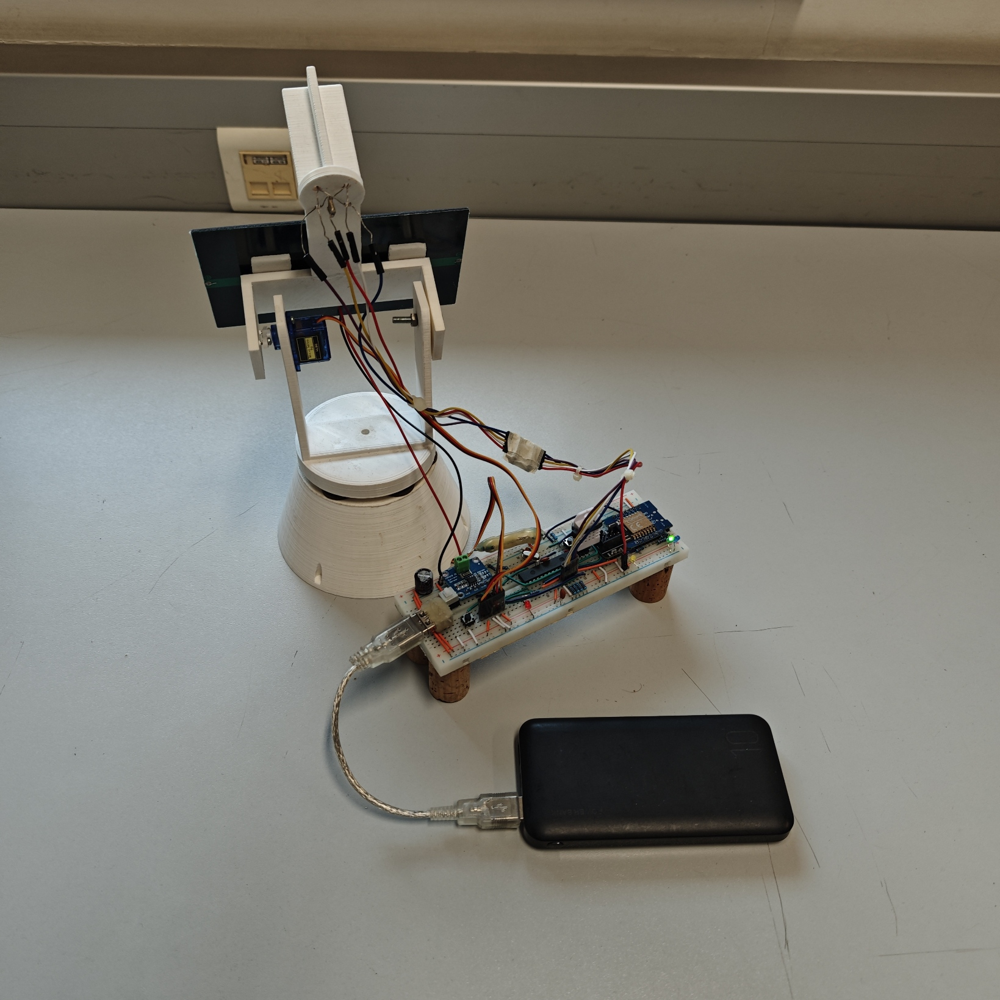
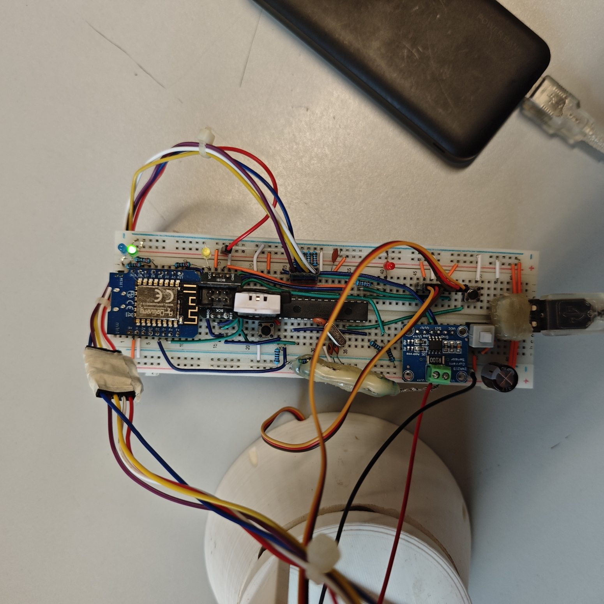

O Problema & A Solução
Desperdício Energético
Painéis solares fixos perdem quase metade da energia potencial. Sem movimento, a incidência solar oblíqua reduz drasticamente a eficiência durante a manhã e tarde.
Rastreamento Ativo
Um sistema automatizado de Eixo Duplo que segue o sol com precisão. Garante incidência perpendicular constante, maximizando a captação de fotões o dia todo.
Arquitetura do Sistema
Funcionalidades Detalhadas
Rastreamento Híbrido
Algoritmo PID com zona morta dinâmica. Prioriza precisão em dias nublados e estabilidade (anti-jitter) sob sol forte.
Controlo Remoto Global
Controlo manual via Web Dashboard (MQTT).
Upgrade V2.0: Supera o
antigo controlo Bluetooth (V1), permitindo agora operar o painel de qualquer lugar, sem limites de alcance
físico.
IoT "Standalone"
O ESP8266 comunica diretamente com a Cloud. (Anteriormente, na V1, isto exigia um PC a correr um script Python como ponte).
Monitorização Ambiental
Leitura assíncrona do sensor DHT22 (Temperatura e Humidade) sem bloquear o loop de controlo crítico dos servos.
Monitorização Energética
Análise em tempo real da produção solar (Tensão, Corrente e Potência) via sensor INA219.
Modo de Suspensão
Interrupção externa (Botão Físico) permite colocar todo o sistema em "Sleep", com o objetivo de poupar energia.
Hardware & Especificações
Esquemático do Circuito
Placa.kikad_sch

Esquemático da PCB
Placa.kikad_pcb

Mapeamento de Pinos (IO)
| Comp. | PIN | Porta MCU |
|---|---|---|
| Servo Pan | 15 | PB1 (PWM) |
| Servo Tilt | 16 | PB2 (PWM) |
| INA219 (I2C) | 27/28 | PC4(SDA) / PC5(SCL) |
| Serial RX | 02 | PD0 (Recebe do ESP) |
| Serial TX | 03 | PD1 (Envia p/ ESP) |
| Nota: TX (03) usa divisor de tensão (1kΩ/2kΩ) p/ proteger o ESP. | ||
| LDR (x4) | 23-26 | PC0 - PC3 |
| DHT22 | 04 | PD2 (INT0) |
Lista de Materiais
| Item / Descrição | Qtd. | Subtotal |
|---|---|---|
| 1. Processamento & Controlo | ||
| ATmega328P-PUDIP-28, 8-bit AVR | 1 | 6.61 € |
| Cristal Oscilador16 MHz + 2x 22pF Cond. | 1 | 0.80 € |
| Programador USBaspISP AVR | 1 | 4.50 € |
| Adaptador ISP10-pin para 6-pin (IDC) | 1 | 1.20 € |
| 2. Atuadores, Sensores & Interface | ||
| Servo Motor SG90Micro Servo | 2 | 6.50 € |
| LDR (Fotorresistência)GL5528 | 4 | 0.80 € |
| Sensor DHT22Tempertura/Humidade | 1 | 5.50 € |
| Push ButtonsInterruptores Táteis | 2 | 0.40 € |
| Interruptor de TravamentoBotão ON/OFF | 1 | 1.50 € |
| 3. Comunicação & Energia | ||
| Wemos D1 Mini (ESP8266)Gateway Wi-Fi/MQTT | 1 | 5.50 € |
| Módulo Bluetooth HC-05BLE | 1 | 4.00 € |
| Sensor INA219Monitor Potência (I2C) | 1 | 4.50 € |
| Painel Solar PV6V 0.25A | 1 | 8.00 € |
| Power BankFonte Portátil 5V/2A USB | 1 | 12.00 € |
| Porta USBUSB Tipo-A Fêmea | 1 | 0.90 € |
| Cabo USBMacho-Macho (Tipo A) | 1 | 2.50 € |
| 4. Passivos, Conectores & Mecânica | ||
| Estrutura Pan/TiltImpressão 3D (PLA) | 1 | 30.00 € |
| BreadboardMatriz de Contactos (830 pts) | 1 | 4.50 € |
| Kit Resistências10kΩ, 1kΩ, 220Ω, 330Ω (1/4W) | 9 | 0.50 € |
| LEDs5mm (Vermelho, Verde, Amarelo) | 3 | 0.30 € |
| Carga Resistiva (Dummy)8x 47Ω | 1 | 1.50 € |
| Condensadores100nF (x2) + 470µF Bulk | 1 | 0.80 € |
| Cabos JumperDupont Macho-Macho/Fêmea | Kit | 3.50 € |
| Kit FixaçãoParafusos e Porcas M3 | Kit | 2.00 € |
| Pés de BorrachaAdesivos Antiderrapantes | 4 | 0.50 € |
Design da PCB (KiCad)
Relatório Técnico de Firmware (Bare-Metal)
1. Cronometragem e Geração de Sinais (Timers)
A gestão de tempo é o alicerce de qualquer sistema de controlo. O ATmega328P dispõe de três temporizadores de hardware, todos utilizados neste projeto para funções específicas e não bloqueantes.
1.1. Timer 0 (8-bit): Base de Tempo
Configurado em modo CTC para gerar uma interrupção precisa a cada 1 ms. Esta interrupção incrementa um contador global (sistema_millis), dissociando a contagem de tempo do ciclo de instrução principal.
- Modo: WGM01 = 1 (CTC)
- Prescaler: 64 (CS01 | CS00)
- Comparador (OCR0A): 249
1.2. Timer 1 (16-bit)
Para o controlo dos servomotores SG90, exigiu-se um sinal PWM de 50Hz com alta resolução. Utilizou-se o Modo 14 (Fast PWM), onde o registo ICR1 define o teto (TOP) da contagem.
- Frequência Alvo: 50 Hz (Período T = 20ms)
- Prescaler (N): 8
1.3. Timer 2 (8-bit): Referência One-Wire
Este temporizador funciona como um cronómetro de alta velocidade para descodificar o protocolo do sensor DHT22. Não gera interrupções periódicas; em vez disso, o seu valor é lido diretamente para medir a duração dos pulsos de sinal.
- Modo: Normal (Contagem Livre)
- Prescaler: 64 (CS22)
- Resolução Temporal: 4µs por tick
2. Multitarefa via Interrupções (ISRs)
O "segredo" para o sistema fazer inumeras tarefas simultaneamente sem bloquear.
Base de Tempo (Heartbeat)
Dispara a cada 1ms exato. A sua única função é incrementar o contador global
sistema_millis. É o relógio mestre que permite agendar todas as outras tarefas sem usar
delay().
Leitura do Sensor (DHT22)
Acordada pela Falling Edge do sinal do sensor. Captura o valor instantâneo do Timer 2 para medir a largura do pulso e descodificar se o bit recebido é '0' ou '1'.
Receção de Comandos
Dispara assim que chega um byte do ESP8266. Permite ao sistema reagir instantaneamente a comandos (ex:'M' para Manual), interrompendo qualquer cálculo.
Transmissão em Background
O "Carteiro Automático". Acorda apenas quando o hardware está livre para enviar mais um byte do Ring Buffer. Garante que o envio de textos longos não bloqueia o ATMEGA.
estado_sistema) devem ser declaradas como volatile e o seu acesso deve ser
atómico (desligar interrupções brevemente durante a leitura) para evitar corrupção de dados.
3. Protocolos de Hardware (Low-Level)
Implementação "Bare-Metal" proprietária. Abandonámos as bibliotecas padrão (Wire.h e DHT.h) para obter controlo total sobre temporizações e, crucialmente, para implementar mecanismos de recuperação de erros que não existem no código nativo do Arduino.
I2C
Sensor INA219A implementação padrão bloqueia o CPU se o escravo não responder. A nossa versão inclui um contador decrescente de segurança em cada etapa (Start, Write, Read), impedindo o bloqueio do sistema em caso de falha de hardware.
Configurado para 100 kHz estáveis.
One-Wire
Sensor DHT22 (Pino PD2)A leitura do DHT22 exige 20ms de atenção total. Para não "congelar" os servos, dividimos o protocolo em duas fases distintas na máquina de estados, permitindo que o PID continue a correr durante a inicialização do sensor.
O pulso de 2ms é gerido por gerir_maquina_estados_dht() usando polling não-bloqueante. O CPU fica livre para outras tarefas.
A leitura dos 40 bits é feita na interrupção INT0. O Timer 2 mede a largura exata de cada pulso (>12 ticks = '1').
4. Buffer Circular e Transmissão Não-Bloqueante
Ponto crítico para a performance.
O Problema do printf
A velocidade de transmissão é 9600 bits/segundo. Enviar um único byte demora cerca de 1 milissegundo.
Se enviarmos uma string de 100 caracteres:
Durante estes 100ms, o processador estaria "congelado". Motores tremeriam e sensores falhariam.
A Solução: Ring Buffer
Implementou-se uma fila de espera (Ring Buffer) de 128 bytes.
- Loop Principal (Produtor): "Atira" os dados para o buffer instantaneamente (RAM é rápida).
- Interrupção (Consumidor): A ISR pega num byte do buffer, envia-o, e retorna o controlo.
Resultado: O tempo de bloqueio cai de 100ms para alguns microssegundos.
5. Aquisição de Sinal (ADC) e Filtragem
Multiplexagem Assíncrona
O ATmega328P possui apenas um conversor ADC sucessivo. A leitura síncrona introduziria atrasos.
Estratégia: O sistema inicia uma conversão (bit ADSC) num canal, executa outras tarefas, e na próxima iteração do loop verifica se a conversão terminou. Só então lê o resultado e comuta o registo ADMUX para o próximo sensor (LDR).
Filtragem Digital (EMA)
Para mitigar o ruído térmico nos sensores LDR, aplicou-se um Filtro de Média Móvel Exponencial:
Onde alpha = 0.08 (Fator de Suavização)
6. Algoritmos de Controlo e Estabilidade
Sistema híbrido que combina PID com heurísticas não-lineares.
6.1. Controlador PID em Tempo Discreto
A implementação do PID segue a equação de diferenças:
- Proporcional (K_p): Força motriz principal proporcional ao desvio.
- Integral (K_i): Corrige erro estacionário, com Clamping Anti-Windup.
- Derivativo (K_d): "Amortecedor" eletrónico para evitar Overshoot.
6.2. Histerese Dinâmica (Anti-Jitter)
Implementou-se uma Zona Morta Variável baseada na irradiância total para evitar oscilações.
| Condição | Tolerância (Zona Morta) | Comportamento |
|---|---|---|
| Nublado (< 750 lux) | Estreita (±40) | Alta sensibilidade. Procura luz difusa. |
| Sol Intenso (> 750 lux) | Larga (±150) | Baixa sensibilidade. Prioriza a estabilidade. |
7. Arquitetura de Estados (FSM)
Máquina de Estados Finita
- PAUSE: Motores desligados.
- AUTO: PID ativo com leitura de sensores.
- MANUAL: Controlo via MQTT.
- NIGHT: Estacionamento seguro (45º V / 5º H).
Segurança (WDT)
Watchdog Timer: A macro WDT_RESET() deve ser executada a cada ciclo.
Se o processador bloquear por mais de 2 segundos, o sistema reinicia automaticamente.
8. Interface Física (UART)
Interligação ATmega328P <-> ESP8266 via serial assíncrona.
Topologia Cross-Over
Comunicação Full-Duplex.
- TX (Transmissão): Pino PD1 do ATmega conecta ao RX do ESP8266.
- RX (Receção): Pino PD0 do ATmega conecta ao TX do ESP8266.
Level Shifting
Adaptação de 5V para 3.3V (Divisor de Tensão) para proteger o ESP.
Lógica e Controlo (Fluxogramas)
Controlo em Tempo Real (MQTT)
Sensores de Luz
O PID está a ajustar os eixos com base nos LDRs
Resultados Experimentais (ThingSpeak)
Análise Gráfica
Histórico de Dados
Consultar, Filtrar e Exportar Registos
| ID | Data / Hora | Temp | Hum | Tensão | Corrente | Potência | |
|---|---|---|---|---|---|---|---|
|
Selecione um intervalo e clique em Carregar |
|||||||
Galeria de Resultados




Código Fonte & Software
A carregar...Conclusões & Próximos Passos
Objetivos Alcançados
Evolução IoT (V1 → V2)
Transição bem-sucedida da comunicação local (Bluetooth HC-05) para Global (Wi-Fi/MQTT). O sistema agora opera autonomamente sem depender de um PC Gateway próximo.
Arquitetura Distribuída
Implementação robusta de processamento paralelo: o ATmega328P garante o timing crítico dos servos, enquanto o ESP8266 gere a latência de rede e o parsing de dados JSON.
Estabilidade Híbrida
O algoritmo de "Zona Morta Dinâmica" provou ser eficaz, eliminando o jitter dos motores sob luz solar intensa (tolerância aumentada para 150) sem perder sensibilidade em dias nublados.
Eficiência Energética
Integração de modos de suspensão via interrupção externa e desligamento automático do sinal PWM (Detach) após 200ms de inatividade.
Monitorização Energética (INA219)
Leitura em tempo real de Tensão, Corrente e Potência solar via sensor I2C. Integração completa com o Dashboard para análise de eficiência do painel.
Trabalho Futuro
Proteção Eólica (Anemómetro)
Integração de sensor de vento para ativar o "Modo de Segurança" (Painel na horizontal/0º) automaticamente em caso de tempestade para evitar danos estruturais.
Gestão Económica (MIBEL)
Ligação à API do Mercado Ibérico (OMIE) para obter o preço da eletricidade em tempo real. O sistema passará a exibir um contador de "Euros Poupados" cruzando a produção solar com o custo atual do kWh.
Cronometragem Offline
Integração de um módulo DS3231 (I2C) para garantir a hora correta e a integridade do datalogging mesmo em caso de falha de Wi-Fi, eliminando a dependência exclusiva de servidores NTP.
Interface Local (HMI OLED)
Instalação de display OLED 0.96" para diagnóstico imediato no terreno (IP, Tensão, Erros, Ângulos) sem necessidade de aceder ao Dashboard Web.
Rastreio Astronómico (GPS)
Algoritmo híbrido que usa coordenadas GPS para calcular a posição solar teórica (Azimute/Elevação), garantindo orientação precisa mesmo em dias nublados ou com sensores obstruídos.